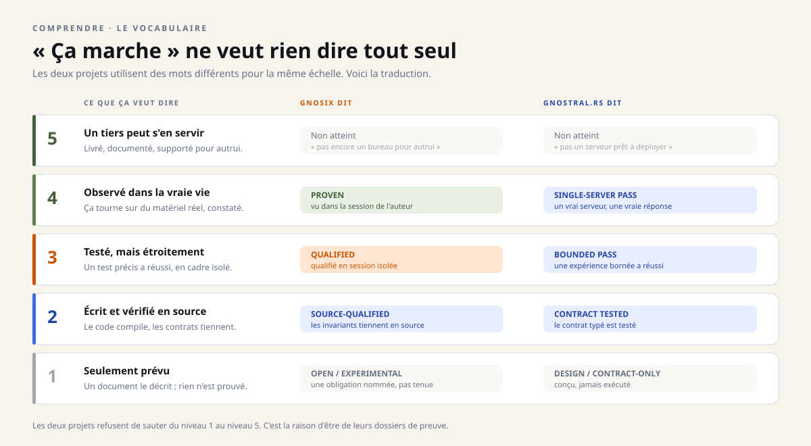

Instantané du 29 octobre 2026. Ce dossier décrit les quatre dépôts tels qu'ils étaient ce jour-là ; les projets ont continué d'avancer depuis, et les dépôts font foi. Les liens soulignés mènent aux sources, figées à leur état de ce jour.
Méthode
Ce qu'un « PASS » veut dire
Dans ces dépôts, un PASS ne dit qu'une chose : le test précis, écrit avant l'essai, a réussi. Il ne dit rien de la stabilité, de la sécurité ou de votre machine. Cette page explique comment se construit cette modestie.
Quatre gestes, dans les quatre dépôts #
Les quatre projets n'ont ni le même langage, ni le même métier. Ils répètent pourtant les mêmes quatre gestes, chacun à sa manière : écrire la porte avant l'essai, garder un reçu après, prendre une empreinte de ce qui a été mesuré, et conserver l'échec quand l'essai rate.
| Geste | gnosix | gnostral.rs | Calix | in.gnu6 |
|---|---|---|---|---|
| Une porte écrite avant | Le contrat CI, à passer avant toute publication. | Des seuils déclarés d'avance : au moins ×1,1, et ±128 Mio de mémoire après l'arrêt. | Le contrat de navigation, publié avant son implémentation (v0.2.5). | Le protocole CUDA-05F, pré-enregistré avant les essais. |
| Un reçu après | Un niveau de preuve publié pour chaque surface. | Un reçu JSON par quête, réponse par réponse. | Des notes de version et un audit de l'espace, chiffres compris. | Un reçu de ratification pour chacun des seize jalons. |
| Une empreinte | Un manifeste SHA-256 de chaque projection publique. | Les empreintes exactes du modèle et du binaire mesurés. | Une archive et son empreinte SHA-256 pour chaque version. | L'empreinte publiée du fichier brut d'endurance. |
| Un échec conservé | Les blocages Wayland restants, écrits le 12 octobre. | Le premier essai de Q-010, à +196 Mio, marqué non qualifié. | Le cas qui échoue à 560 pixels, gardé dans les tests. | Trois acquisitions CUDA-05F ratées, archivées sans réinterprétation. |
Une échelle, plusieurs vocabulaires #
Chaque dépôt nomme ses niveaux de preuve à sa façon : PROVEN et QUALIFIED pour gnosix, BOUNDED PASS et SINGLE-SERVER PASS pour gnostral.rs, quinze états de quête pour in.gnu6, un tableau d'état « qui prime sur tout document plus optimiste » pour Calix. Sous les mots, la même question : jusqu'où la preuve va-t-elle ?

Ce qu'aucun PASS ne dit #
- La durée. Un essai de 125 secondes ne dit rien d'une semaine d'usage.
- L'adversaire. Un test fonctionnel ne prouve pas qu'un attaquant ne passera pas.
- Votre machine. Les chiffres viennent d'une configuration précise ; ils ne voyagent pas.
- Le produit. Une suite de PASS ne fait pas un logiciel prêt pour autrui ; c'est une porte à part, encore fermée pour les quatre.
Le droit de dire « inconnu » #
Le dernier geste est le plus rare : refuser de deviner. gnosix refuse une action quand l'état du bureau est inconnu ou périmé. gnostral.rs écrit « inconnu » plutôt qu'une valeur plausible. Calix refuse un document dont il ne connaît pas la version, au lieu d'en afficher la moitié. in.gnu6 laisse la priorité des quêtes annexes à l'opérateur humain, au lieu de la décider seul.
Pour voir la méthode à l'œuvre sur un vrai chiffre, suivez le parcours de Vérifier un chiffre soi-même ; pour la voir dans le temps, la chronologie du mois.